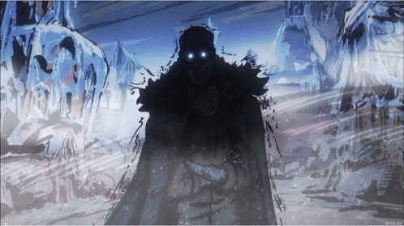

jauvis dozier

information science @ utk, concentrating in ux design. i like building things where design and code meet. currently making autm.
// exp
ux analysis interntombras media & web design assistantutk fcmf
b.s. information scienceuniv. of tennessee
// misc
design portfolio | view here
resume | read here
stack | react, javascript, python, c/c++, figma